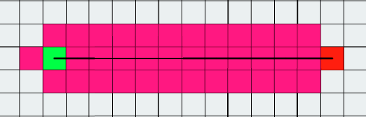
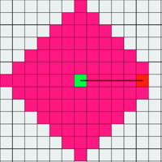
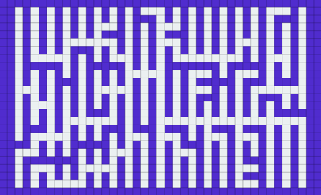

This tool uses the P5.js library to visualize pathfinding algorithms.
To use this tool, simply "Place Start", "Place End", click on the grid to
make obstacles or generate a maze, then click "Run Algorithm".
To learn more, click "Next".
About the algorithms!
A*(or AStar) is a pathfinding/searching algorithm that operates on a bias. A* knows where the end is and essentially
defaults its direction towards the end. If at any point it cannot progress further towards the end, it settles
for the next best option. Repeating this, A* finds a shortest path.
More about A* here: https://en.wikipedia.org/wiki/A*_search_algorithm

About the algorithms!
Breadth-First Search(or BFS) is a pathfinding/searching algorithm that is much more brute force than A*.
BFS does now know where the endpoint is, so it simply looks in every direction. As long as it hasn't
reached the end, the places that it looked previously look in every direction. Repeating this, BFS finds a shortest path.
More about BFS here: https://en.wikipedia.org/wiki/Breadth-first_search

About the algorithms!
Prim's Algorithm is used to find a minimum spanning tree of a graph. If we give it some randomness, it can be used
to generate mazes. This randomized implementation starts from a spot, adds all of the walls to a list, then chooses
a random wall to delete if only one of the two sides of it have been visited. It then adds all of the new walls to the list.
This repeats until the maze is complete.
More about Prim's Algorithm here: https://en.wikipedia.org/wiki/Maze_generation_algorithm#Randomized_Prim's_algorithm

About the algorithms!
These algorithms have much more detail to them than I can give them credit for in this short-form tutorial.
If you are interested, I would encourage you to look into them futher. It can get quite complex.